Solar, Batteries & Off-Grid Power
Light, comms, water, cold food and heat: keeping the essentials running when the grid goes down.
1. Standard rooftop solar switches OFF in a power cut. Grid-tied inverters must shut down when the grid fails (anti-islanding), so they don't electrocute line workers. For power during a blackout you need a battery with backup/EPS, a separate off-grid system, or a portable power station. 2. UK winter sun is weak. A panel gives roughly a sixth to a tenth of its June output in December. Size for winter, or accept a generator as the winter top-up. 3. Batteries and DC wiring start fires. Every positive cable must be fused, batteries go outside living spaces, and anything connected to your house wiring is a job for a registered electrician. This is general guidance, not electrical or legal advice. UK electrical work must meet BS 7671.
1. How Much Power Do You Actually Need?
Start with a load audit, not a shopping list. In a crisis you run essentials only.
| Load | Typical draw | Hours/day | Wh/day |
|---|---|---|---|
| LED lighting (4 bulbs) | 4 × 7 W | 5 | 140 |
| Phones (×3) + radio | — | — | 60 |
| Wi-Fi router + laptop | 10 W + 45 W | 6 | 330 |
| Fridge-freezer (A-rated) | 80–150 W cycling | 24 | 600–1,000 |
| Chest freezer (alone) | 60–100 W cycling | 24 | 400–700 |
| Gas boiler (controls + pump) | 80–150 W | 6 (winter) | 500–900 |
| Water pump (well/borehole) | 500–1,000 W | 0.5 | 250–500 |
| CPAP (no humidifier) | 30–60 W | 8 | 240–480 |
| Electric kettle | 2,000–3,000 W | 0.2 | 400–600 ⚠️ |
| Microwave | 1,000–1,500 W | 0.2 | 200–300 |
| Electric heater / oven / immersion | 2,000–3,000 W | — | ✗ Not realistic off batteries |
- Survival (lights, comms, phones): ~200–300 Wh/day. One portable power station handles this.
- Comfortable (+ fridge-freezer, router, laptop): ~1–1.5 kWh/day.
- Functional home (+ boiler, pump, some cooking): ~3–5 kWh/day.
Cook and heat with gas, wood or a stove, not electricity. Heat is the energy hog.
Modern boilers need electricity for the controls, fan and pump. Ask an electrician to change the boiler's fused spur to a plug and socket, so you can run it from a power station or inverter during an outage (≈100–150 W).
2. Five Ways to Get Power When the Grid Is Down
| Option | Cost | Works in a power cut? | Skill | Best for |
|---|---|---|---|---|
| A. Portable power station + folding panels | £300–2,000 | ✅ Yes | None | Everyone. Start here. |
| B. Plug-in (balcony) solar ≤ 800 W | £300–800 | ❌ Not on its own (shuts off) | None | Cutting bills; renters |
| C. Rooftop grid-tied solar + battery with backup (EPS) | £6,000–15,000 | ✅ If it has backup/EPS or a whole-home gateway | Installer | Homeowners: long-term savings + resilience |
| D. Stand-alone off-grid system (shed/bunker/cabin) | £1,500–8,000 DIY | ✅ Yes: fully independent | DIY with care | Preppers who want full independence |
| E. Generator | £500–3,000 | ✅ Yes, while fuel lasts | Electrician for hook-up | Winter top-up; big loads |
The resilient answer is usually a layered mix: A (immediate) + C or D (daily) + E (winter backup) + small batteries (lights and radios).
3. UK Sun: Sizing for Winter
Approximate daily output per 1 kWp of panels (south-facing, ~35°)
| Month | South England | Midlands / Wales | Scotland |
|---|---|---|---|
| Dec | 0.5–0.7 kWh | 0.4–0.6 | 0.2–0.4 |
| Feb / Oct | 1.5–2.0 | 1.3–1.8 | 1.0–1.5 |
| Apr / Aug | 3.5–4.0 | 3.2–3.8 | 3.0–3.5 |
| Jun | 4.0–4.8 | 3.8–4.5 | 3.6–4.3 |
| Year | ~950–1,050 kWh | ~850–950 | ~750–900 |
These are rough planning figures; overcast weeks give far less. Check your postcode for free with the EU PVGIS tool and use its December figure.
The sizing formula
- Daily need (Wh) from your load audit, e.g. 1,200 Wh.
- Battery (Wh) = daily need × days of autonomy ÷ usable depth of discharge ÷ inverter efficiency. e.g. 1,200 × 3 days ÷ 0.9 (LiFePO4) ÷ 0.9 = ~4,400 Wh (≈ 5 kWh)
- Panels (W) = daily need ÷ (winter kWh per kWp) × 1.25 losses. e.g. 1,200 ÷ 0.6 × 1.25 ≈ 2,500 W of panels to fully cover December in the south. Summer the same need takes ~400 W, which is why most UK systems pair ~1–2 kWp of panels with a generator for the darkest 8–10 weeks.
Steepen panels to 55–60° for winter (they shed snow and catch low sun). Keep them clean. Make sure nothing shades them between 10 am and 2 pm in December (the sun is only ~15° high at noon). Cut usage hard in Nov–Jan.
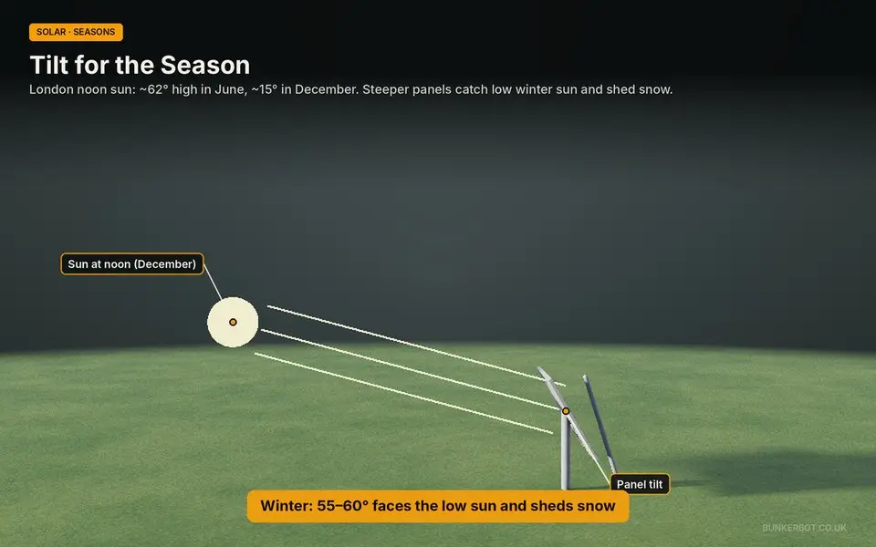
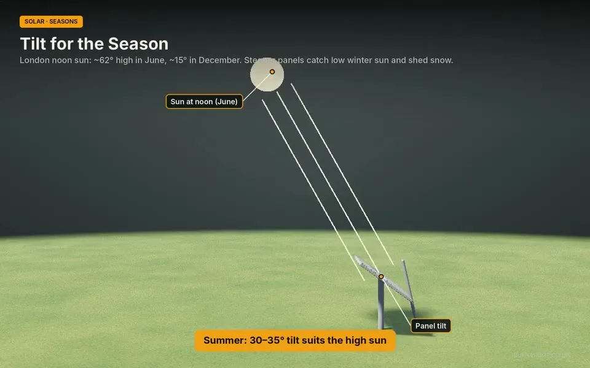
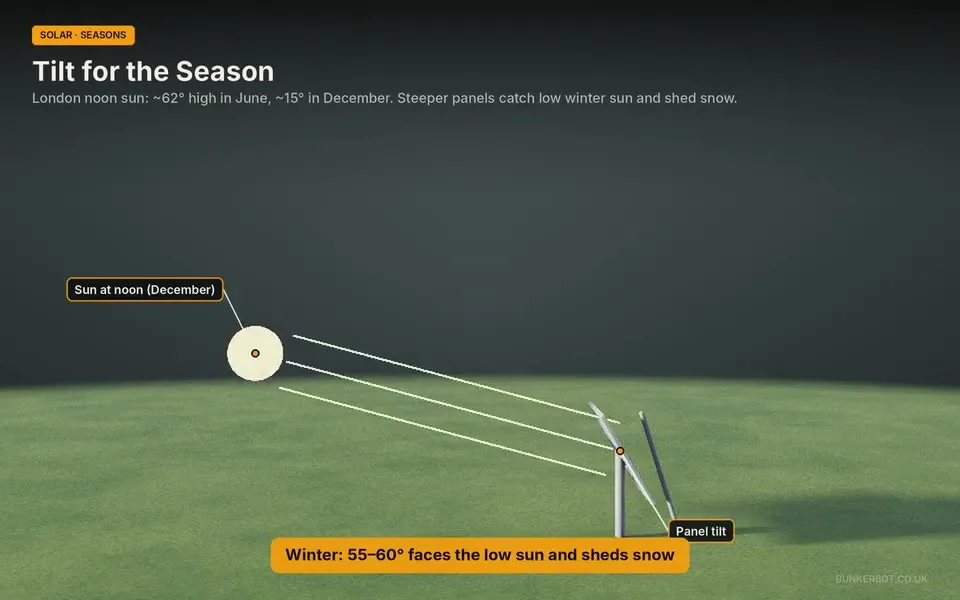
4. The Rules (2026)
| Topic | What applies |
|---|---|
| Planning: roof panels (England) | Usually permitted development: panels mustn't sit above the highest part of the roof (excluding the chimney) and mustn't project more than 200 mm from the slope. The rules were widened on 27 Aug 2026 (more locations, flat roofs, plug-in solar). Projects that no longer qualify can use the old rules until 26 Aug 2027. Listed buildings, conservation areas, Scotland, Wales and NI differ: check with your council. |
| Plug-in solar | Legal across GB from 27 Aug 2026 for compliant kits up to 800 W, plugged into a standard socket. It must meet the UK product specification. Not on wooden structures or cladding. |
| Building Regs: electrical (England & Wales) | Connecting to your house wiring (new circuits, consumer-unit work, inverters, batteries) is notifiable under Part P. Use a registered electrician, or notify Building Control before you start. Scotland uses its own Building Regulations. |
| Grid connection | G98: small inverters (≤16 A per phase, i.e. ~3.68 kW single-phase): install, then notify the DNO within 28 days. G99: bigger systems need DNO approval before switching on. |
| Export payments (SEG) | Need an MCS-certified installation and the DNO notification. A DIY system can be legal but won't earn export payments. |
| Battery fire safety | PAS 63100:2024 sets out how home batteries should be installed. Prefer a location outside living space (garage, outbuilding, external enclosure) and never in an escape route. Fit warning labels at the consumer unit. |
| Working at height | Roofs kill DIYers every year. Scaffold with edge protection, not ladders, for roof work. |
| Insurance & mortgage | Tell your insurer. DIY roof installs can affect cover. |
5. Retrofitting Panels on Your Roof
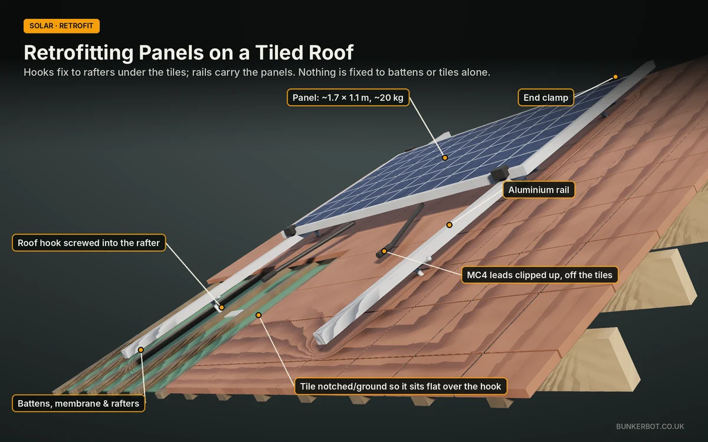
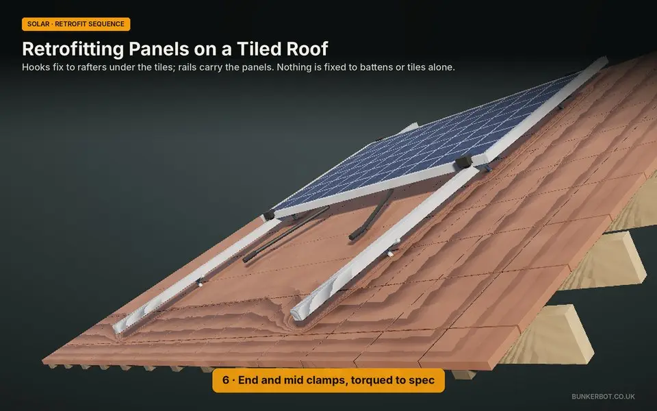
For a grid-connected rooftop system, we strongly recommend an MCS installer. You get scaffolding, insurance, a Part P sign-off, the DNO notification and SEG eligibility. Many preppers have the installer fit a hybrid inverter with backup/EPS and battery-ready wiring, then add their own off-grid kit separately. The steps below explain the job so you can specify it, check it, or do it on an outbuilding.
Step 1: Survey
- Orientation: south is best; east/west lose ~15–20%; north-facing UK roofs are rarely worth it.
- Pitch: 30–40° is ideal. Flat roofs need tilted frames and ballast.
- Shade: chimneys, trees and dormers. Even partial shade on one panel drags down a whole string unless you use optimisers or micro-inverters.
- Structure: panels + rails add ~12–15 kg/m². Check the rafters (size, spacing, rot, any past alterations). Have older or trussed roofs checked by a structural engineer.
- Roof covering: concrete interlocking tiles are easiest; slate needs slate hooks or replacement flashings; plain clay tiles are fiddly; suspected asbestos (pre-2000 cement sheets/slates): stop and get it tested.
- Cable route: from the roof to the loft, down to the inverter location (garage/utility) and to the consumer unit.
Step 2: Equipment
| Item | Notes |
|---|---|
| Panels | 400–450 W mono PERC/TOPCon, ~1.7 × 1.1 m, ~20–22 kg |
| Roof hooks | Matched to your tile type (adjustable height), stainless steel, 2 per rail per ~1.2 m |
| Rails | Aluminium, with splice kits |
| Clamps | End clamps and mid clamps sized to the panel frame depth |
| Coach screws | Stainless steel, ≥ 6 × 100 mm, ≥ 60 mm into the rafter |
| DC solar cable | 4 or 6 mm² UV-rated, double-insulated (red/black) |
| MC4 connectors | Genuine, same brand on both halves, crimped with the correct tool |
| DC isolator | DC-rated, near the inverter (many inverters have one built in) |
| Inverter | Hybrid inverter (battery + backup/EPS) if you want blackout power |
| AC isolator, cable, MCB/RCBO | Electrician |
| Tools | Scaffold, angle grinder (to notch tiles), drill/impact driver, MC4 crimper and spanners, multimeter rated ≥ 1,000 V DC, torque wrench, cable glands, flashing (for slates) |
Step 3: Mounting
- Scaffold with edge protection.
- Mark the rafters (lift tiles to find them; they're usually at 400 or 600 mm centres).
- Lift tiles at each hook position. Fix the hook to the rafter (never just to a batten) with stainless coach screws. Pack it so the hook arm sits clear of the tile below.
- Notch the underside of the tile with a grinder so it sits flat over the hook arm. A rocking tile lets water in.
- Fit the rails to the hooks. Use a string line to get them straight and parallel, with spacing per the panel's clamping zones (usually ~¼ of panel length from each end).
- Run the cables before the panels go on: clip MC4 leads to the rails (never lying on tiles), and take the DC cables into the loft through a sealed tile vent or gland.
- Fit the panels: end clamps at each end, mid clamps between panels. Torque to spec.
Step 4: Wiring the strings
- Series (+ to −) adds voltage; parallel adds current.
- Cold-weather voltage check: panel Voc rises in cold weather. Multiply the string Voc by ~1.15 (UK lows around −10 °C) and make sure it stays below the inverter/MPPT maximum input voltage. Exceeding it destroys the controller.
- Check the current is within the MPPT input limit.
- Polarity check with a multimeter before connecting anything. Reverse polarity kills inverters.
- DC isolator off, then connect the inverter. The AC side goes to the consumer unit via an electrician.
A string can sit at 300–600 V DC, and DC arcs don't self-extinguish like AC. Never unplug an MC4 under load. Switch the DC isolator off first. To work on panels in daylight, cover them with an opaque sheet.
Step 5: Commission & paperwork
Insulation resistance and polarity tests, an Electrical Installation Certificate, Part P notification, G98/G99 to the DNO, an MCS certificate (if using an installer), labels at the meter/consumer unit, and keep the warranty paperwork in your grab-file.
6. Second-Hand Panels & Re-Fitting Old Ones
Panels lose only ~0.5% output per year, so used panels from re-roofs and upgrades are a cheap prepper resource (often £20–60 each).
Inspect before you buy:
- Cracked glass, delamination (milky patches), snail trails (micro-cracks), scorch marks or browning (hot-spots), a cracked or burnt junction box, damaged MC4 leads.
- Test in sun: measure open-circuit voltage (Voc) and short-circuit current (Isc) with a multimeter and compare with the label. Voc within ~5% and Isc within ~15–20% (allowing for sun strength) is reasonable.
- Mixed panels: only put panels with matching current in series, and matching voltage in parallel. Otherwise give each type its own MPPT.
Re-fitting panels (roof repair, house move, moving them to a bunker):
- Cover the panels or work at dawn/dusk; switch the inverter and DC isolators off.
- Unclip the MC4s with the release tool and cap them.
- Remove the clamps, then the panels (two people). Store them on edge, glass-to-glass with cardboard between, never flat with weight on top.
- Inspect the hooks and rails; replace any corroded screws. Re-flash or re-notch tiles as needed.
- Re-fit, re-test polarity and Voc, then re-commission. A grid-tied system needs the electrician/installer to re-certify.
7. Ground-Mount & Shed/Bunker Off-Grid Build
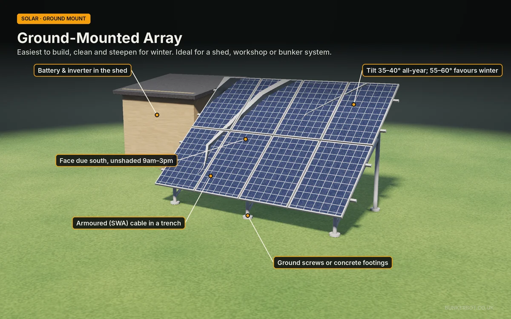
Frame
- Aluminium kit frames or treated-timber/galvanised-steel A-frames, fixed with ground screws or concrete footings. Design for wind uplift: a panel is a sail.
- Bottom edge ≥ 0.5 m off the ground (snow, grass, livestock).
- Adjustable tilt (35° summer / 60° winter) adds ~10–20% to winter output.
- Cable to the shed in steel-wire armoured (SWA) cable in a trench (≥ 450 mm deep, with marker tape), or in a duct.
The off-grid system board
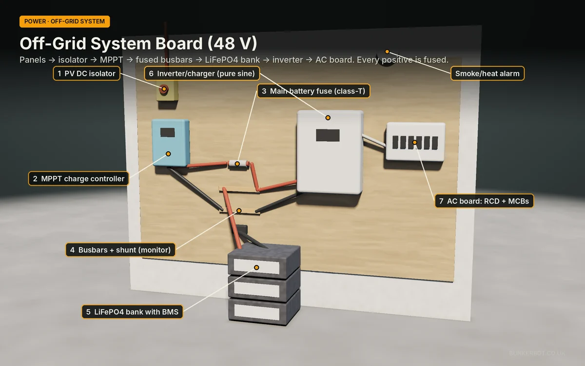
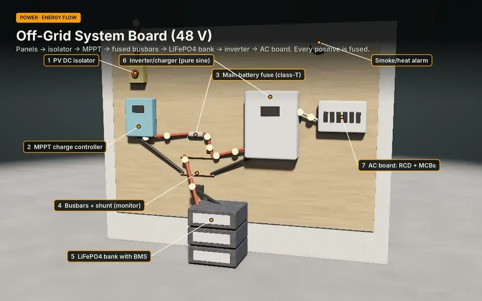
| # | Component | Choose |
|---|---|---|
| 1 | PV DC isolator | DC-rated for string voltage |
| 2 | MPPT charge controller | Max PV voltage > cold Voc; charge current ≈ battery capacity ÷ 5 (e.g. 100 Ah 48 V → 20 A+) |
| 3 | Main battery fuse | Class-T or MRBF fuse within 30 cm of the battery positive, rated for the battery's short-circuit current |
| 4 | Busbars + shunt | Copper busbars; a shunt-based battery monitor (state of charge) |
| 5 | Battery bank | LiFePO4 with a built-in BMS, 12/24/48 V (see §8) |
| 6 | Inverter/charger | Pure sine wave. Continuous rating ≥ your largest load; surge ≥ 2–3× for motors and fridges. Inverter/chargers can also charge from a generator. |
| 7 | AC distribution | Small consumer unit with RCD/RCBOs, earthing arrangement designed by an electrician |
| — | Smoke/heat alarm, fire extinguisher (rated for electrical fires), warning labels | Strongly recommended; PAS 63100 covers labelling and fire safety |
Choose your voltage
| System | Up to ~ | Why |
|---|---|---|
| 12 V | 1 kW inverter | Vans, small sheds, simple 12 V lights/fridges |
| 24 V | 2–3 kW | Medium cabins |
| 48 V | 3–10 kW | Best for home/bunker: a quarter of the current of 12 V, so thinner cables and less heat |
Cable sizing (keep voltage drop < 3%)
Thick, short battery cables are essential: a 3 kW inverter on 12 V pulls ~250 A, but on 48 V only ~65 A. Use proper fine-strand battery cable, hydraulic-crimped lugs, heat-shrink, and torque every terminal. Loose lugs are the #1 cause of DIY battery fires.
8. Battery Banks: Chemistry, Sizing, Safety
| Chemistry | Usable depth | Cycles (to 80%) | Cold | Safety | Verdict |
|---|---|---|---|---|---|
| LiFePO4 (LFP) | 90–100% | 3,000–6,000+ | Must not charge below 0 °C (unless self-heating) | Most stable lithium type | ✅ Best choice for homes and preppers |
| NMC lithium | 80–90% | 1,000–2,000 | Similar | Higher thermal-runaway risk | Older power stations and EVs; avoid for fixed banks |
| AGM / gel lead-acid | 50% | 400–1,000 | Tolerates cold | Low fire risk; heavy | Cheap backup; short life if deeply cycled |
| Flooded lead-acid | 50% | 1,000–1,500 | Tolerates cold | Hydrogen gas: ventilate | Old-school off-grid; needs watering |
| Sodium-ion | 90–100% | 3,000+ | Good in cold | Very stable | Emerging; promising for unheated sheds |
Safety rules
- Location: outside living space where you can (garage, outbuilding, external cabinet); never in a loft, under the stairs, in a hallway or an escape route. Keep it off combustible surfaces.
- Temperature: 5–30 °C ideal. LiFePO4 in an unheated shed needs self-heating batteries or an insulated box.
- BMS: every lithium battery must have a battery management system (cell balancing, over/under-voltage, temperature cut-off).
- Fuse every positive conductor, as close to the battery as possible.
- Detection: a heat alarm (or smoke alarm) above the battery; a CO2 or dry-powder extinguisher nearby. A lithium battery fire can't really be extinguished: get out and call 999.
- Mixing: never mix old and new batteries, or different chemistries or brands, in one bank.
Storage for preppers
- Store spare LiFePO4 at 40–60% charge, cool and dry, and top up every 6 months.
- Lead-acid must be stored fully charged and float-charged; left flat, it sulphates and dies in weeks.
9. Plug-In Solar & Portable Power Stations
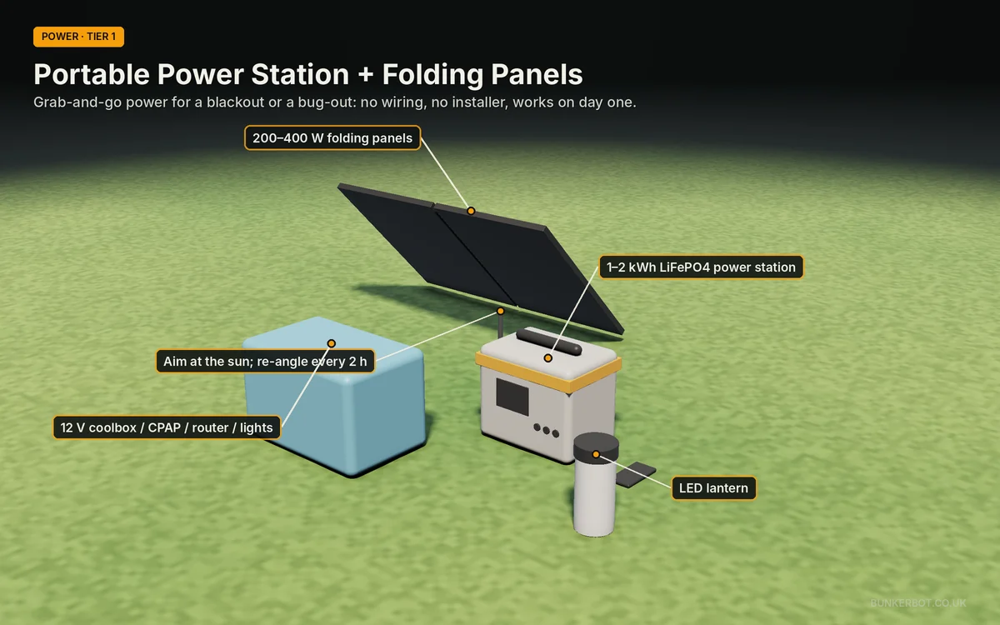
Portable power stations
- Pick LiFePO4, 1–2 kWh for a household (500 Wh for a flat or a bug-out), a pure sine output ≥ 1,500 W, UPS/pass-through (keeps a router or CPAP alive when the grid drops), a USB-C PD 100 W port, and solar input ≥ 400 W.
- Panels: 200–400 W of folding panels. Angle them at the sun and re-aim every couple of hours.
- Expandable models take add-on batteries; some connect to the house through a transfer switch fitted by an electrician.
- Keep it at 80–100% during storm season and at ~60% for long storage. Cycle it every few months.
Plug-in ("balcony") solar
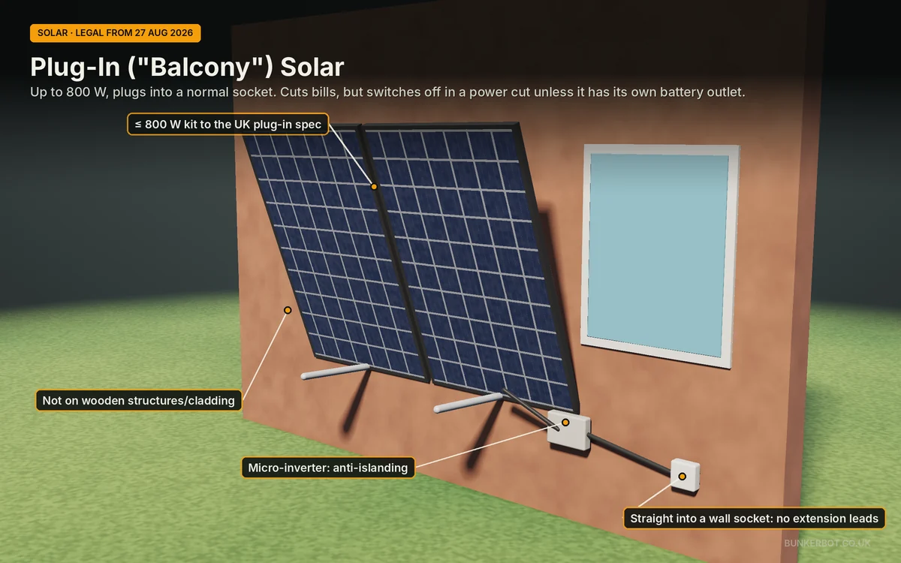
- Up to 800 W, plugged into a standard socket, with a kit built to the UK plug-in specification.
- Shuts down in a power cut (anti-islanding). For blackout use, keep a portable power station that a folding panel can charge directly. The first plug-in rules are written for socket-connected kits without batteries, so check that any kit with a battery is certified for plugging in before you buy.
- Mount it securely: wind loads on a balcony rail are huge. Don't mount it on timber cladding or wooden structures, and don't use extension leads.
10. Small-Battery Prepping
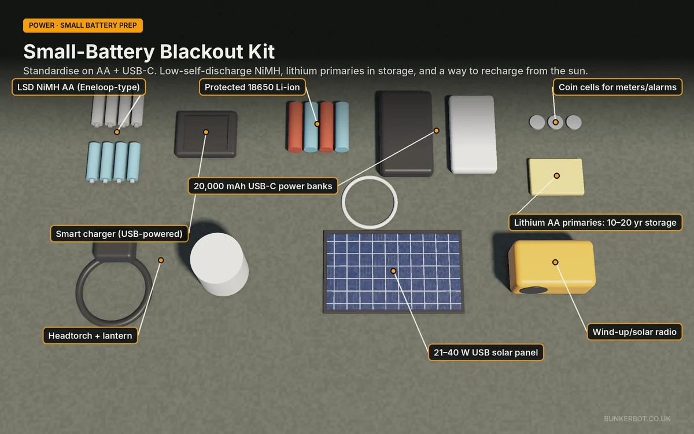
| Battery | Use | Shelf life | Prep tip |
|---|---|---|---|
| LSD NiMH AA/AAA (Eneloop-type) | Torches, radios, remotes, game cameras | Hold ~70–85% after a year in storage | Your daily-use workhorse. Buy 16–24 AA + 8 AAA and a USB smart charger. |
| Lithium primary AA/AAA (non-rechargeable) | Long-term storage, smoke alarms, cold weather | 10–20 years, works to −40 °C | Your "sealed cache" battery |
| Alkaline AA/AAA | Cheap backup | 5–10 years | Can leak: never store them inside devices |
| 18650 / 21700 Li-ion (protected, flat- or button-top) | High-output torches, power banks | Store at ~50% | Buy from reputable brands only. Fakes are fire risks. |
| CR2032 / CR123A | Scopes, meters, alarms, key fobs | 10 years | Keep a few spares of every size your kit uses |
| USB-C power banks (10–20,000 mAh) | Phones, headtorches, radios | Recharge every 3–6 months | One per person |
| 12 V leisure battery | Car/van fridge, LED strips | Lead-acid: keep it charged | Works with a 12 V fridge and a cigarette-socket inverter |
The kit:
- Headtorch per person + 1 lantern per room
- 24 × NiMH AA, 8 × AAA + USB charger
- 12–24 lithium AA (sealed cache)
- 2–3 USB-C power banks
- 21–40 W folding USB solar panel
- Wind-up/solar/battery radio (FM/LW for BBC Radio 4 emergency broadcasts)
- Spare coin cells for every device you own
- Rotate: mark the purchase date on every pack. Test and top up at each clock change (March and October).
11. Generators: The Safe Way
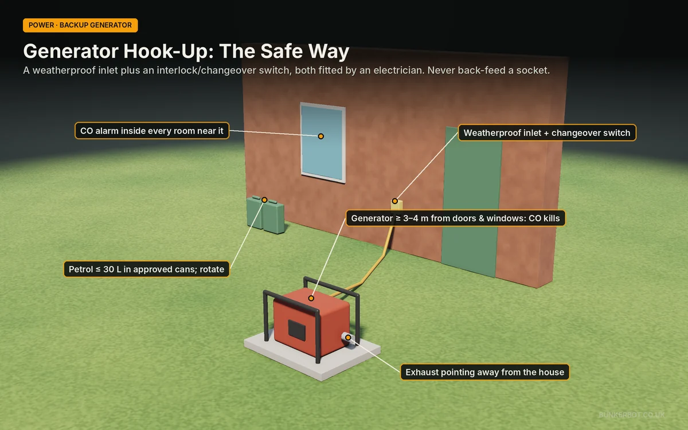
| Type | Pros | Cons |
|---|---|---|
| Inverter generator (1–3 kW) | Quiet, clean power safe for electronics, efficient | Smaller output |
| Open-frame (3–8 kW) | Runs big loads | Noisy; "dirty" power; thirsty |
| Dual-fuel (petrol + LPG) | LPG stores indefinitely; cleaner | ~10% less power on LPG |
| Diesel | Long engine life; diesel stores well | Expensive, heavy, noisy |
Non-negotiable safety
- ☠️ Carbon monoxide: never run a generator indoors, in a garage (even with the door open), in a porch or under a window. Keep it at least 3–4 m from doors, windows and vents, with the exhaust pointing away. Fit CO alarms in the house.
- ⚡ Never back-feed the house through a socket with a "male-to-male" lead. It can electrocute you, your neighbours or line workers when the grid returns, and it can destroy the generator. Get an electrician to fit a weatherproof inlet + changeover/interlock switch.
- ⛽ Petrol storage at home: up to 30 litres with no need to notify anyone, in suitable containers (plastic ≤ 10 L, metal ≤ 20 L). Store up to 275 L only after notifying your local Petroleum Enforcement Authority in writing. Keep it away from the house, ignition sources and children.
- Fuel rotation: petrol degrades in 3–6 months (12–24 months with stabiliser). Use E5 rather than E10 for storage, and use it in the car before it ages.
- Run the generator monthly for 20 minutes under load; change the oil per the manual; keep spare plugs, oil and an air filter.
Run-time maths
A 2 kW inverter generator at half load uses ~0.5–0.7 L/hour. Run it 2–3 hours a day to recharge your battery bank through the inverter/charger, then switch off. That stretches 30 L to around 2–3 weeks.
12. Blackout Power Plan
| Phase | Actions |
|---|---|
| 0–2 hours | Headtorches on. Check neighbours/the DNO (call 105) to see whether it's local or widespread. Close freezer lids (a full freezer stays frozen ~24–48 h). Switch UPS/power station loads to essentials. |
| 2–24 hours | Power station runs router/phones/lights. Boiler plugged into the power station if it's cold. Charge everything while you have solar. Fill water containers in case pumps fail. |
| 1–3 days | Generator 2–3 h/day to recharge the battery bank and cycle the freezers. Cook on gas/wood. Battery-radio updates. |
| 3+ days | Ration to the survival budget (~300 Wh/day). Eat freezer contents first, then preserve (see Butchery). Protect fuel. |
Priority order for limited power: 1. medical devices → 2. communications (phone, radio) → 3. lighting → 4. water pump → 5. heating controls → 6. food cold-chain → 7. everything else.
13. Collapse Collapse Protocol: Power After the Grid
Some of these steps (disconnecting from the grid, unnotified wiring, re-purposing equipment) bypass normal rules. They are listed for a scenario in which the grid, electricians and regulators are gone for months. Today, use a registered electrician.
- Islanding your home system: with the grid permanently down, a grid-tied inverter is useless. Isolate the house from the incoming supply at the main switch/isolator, and re-wire the panels to an off-grid MPPT + battery + inverter (§7). This is why preppers keep a spare off-grid MPPT and inverter in storage.
- Spares cache: MPPT controller, small inverter, MC4 connectors and crimper, 50 m solar cable, fuses (every rating you use), a BMS, multimeter, spare panel. Store them in a sealed metal box (a steel ammo can or similar), which also gives some protection against electromagnetic pulses (EMP).
- Panel salvage (with the owner's permission / from your own property): see §6 for safe removal and testing. Panels last 25–30+ years.
- Vehicles are generators: a car alternator charges a 12 V battery at ~50–100 A while idling (fuel-hungry; for emergencies only). EV batteries with vehicle-to-load (V2L) can run ~2–3 kW of appliances.
- Micro-hydro: a stream with 5–10 m of drop and a few litres per second can give 100–500 W continuously, 24/7 in winter, when solar is weakest. It's the best off-grid source in hilly Britain. (It needs an abstraction licence/consent now.)
- Small wind: works best on exposed sites in winter. Choose quality turbines, with a guyed mast well clear of the house.
- Human power: pedal generators give ~50–100 W while you pedal, enough for phones and lights but not a fridge.
- Cut demand to the bone: ice-box cooling in winter, root cellars, hay-box cooking, oil lamps/candles (fire risk), and daylight working hours.
14. Kit Tiers
Tier 0: Blackout basics (£50–200 · everyone)
- Headtorch per person, 2 LED lanterns
- 24 × NiMH AA + USB charger; 12 lithium AA (sealed)
- 2 × 20,000 mAh power banks
- Wind-up/solar radio
- CO alarm + smoke alarms with lithium batteries
- Printed blackout plan; DNO number 105 saved and written down
Tier 1: Portable resilience (£400–2,000 · beginner)
- 1–2 kWh LiFePO4 power station with UPS function
- 200–400 W folding solar panels
- Electrician converts the boiler spur to a plug
- 12 V coolbox/fridge; 21–40 W USB panel
- Optional: 800 W plug-in solar kit (choose one with an off-grid outlet)
Tier 2: Off-grid circuit (£2,000–8,000 · competent DIY + electrician sign-off)
- 1–3 kWp ground-mount or shed-roof array
- 48 V LiFePO4 bank 5–10 kWh, MPPT, 3–5 kW inverter/charger, class-T fuse, shunt, busbars
- 2–3 kW inverter generator (dual-fuel) + inlet and changeover switch
- 30 L petrol in metal cans with stabiliser + LPG cylinders
- Battery cabinet with heat alarm; extinguisher
- Skills: load audit, multimeter use, crimping, reading a battery monitor
Tier 3: Whole-home resilience (£8,000–25,000 · installer)
- 4–6 kWp roof array (MCS) + hybrid inverter with whole-home backup
- 10–20 kWh battery, installed to PAS 63100 in a garage or external enclosure
- Ground-mount winter array (steep tilt) on its own MPPT
- Larger dual-fuel or diesel generator with automatic changeover
- Separate off-grid circuit for essentials: fridge, boiler, pump, comms
- Well/borehole pump on the backed-up circuit
Tier 4: Bunker / homestead (£25,000+)
- Two independent systems (house + bunker/outbuilding) so one fault isn't total failure
- Micro-hydro or wind for winter generation
- Spares cache in steel boxes: MPPT, inverter, BMS, panels, cable, connectors, fuses, crimpers, meters
- 12 months of rotated generator fuel within legal limits (prefer LPG/diesel)
- Printed wiring diagrams, manuals and settings for every device
Related Sections: Food & Water → Smallholding Livestock → Butchery & Game Processing → UK Survival Hunting & Trapping